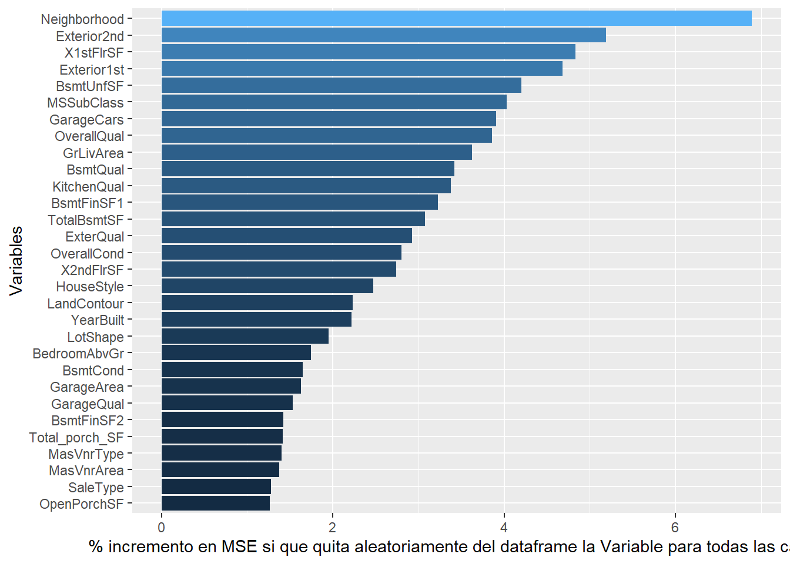
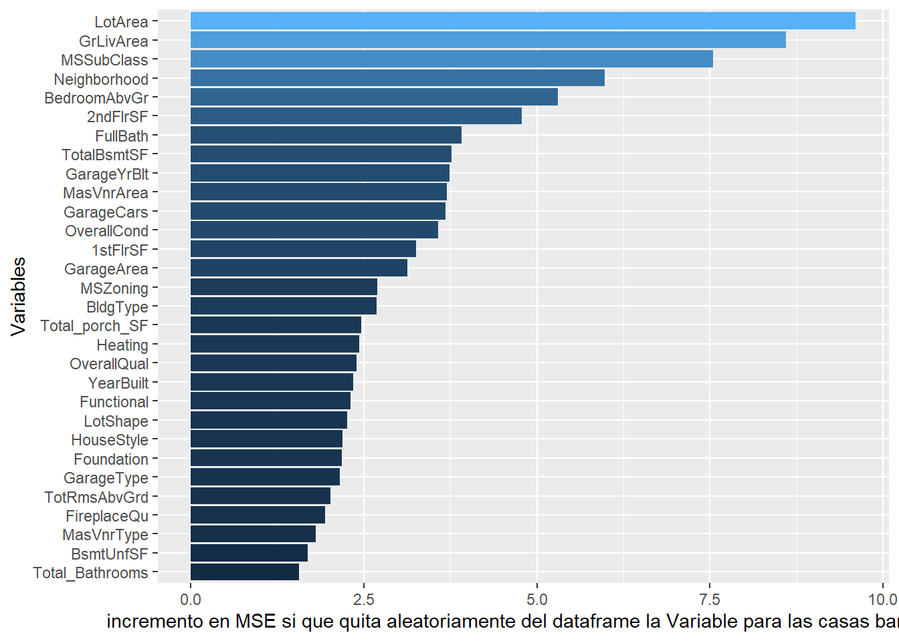
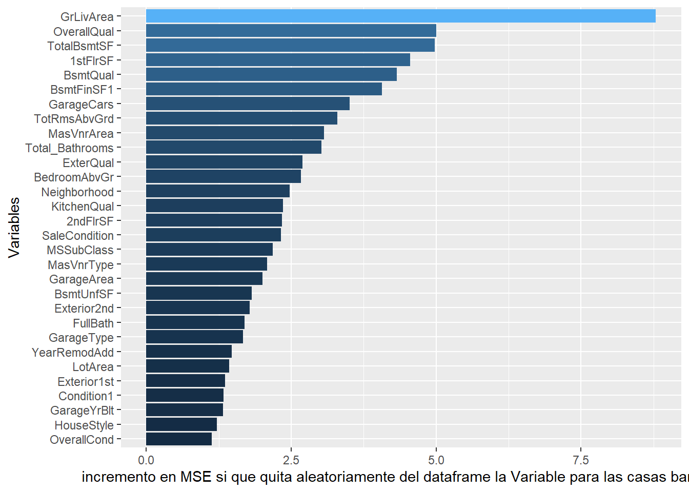

MACHINE LEARNING
En primer lugar cargaremos los datasets obtenidos en las fases anteriores del modelado de datos.
En esta parte de la práctica, intentaremos evaluar cuáles son las variables que más influyen en el precio de una casa. Además, como nuestro objetivo es obtener las variables que son más significativas para distinguir las casas que consideramos “baratas” de las consideradas como “caras”, intentaremos realizar el alterior análisis restringidos a las poblaciones de cada una de las familias de casas. Como se verá en el posterior análisis de los clusters que forman estas casas, pondremos el umbral de decisión para distinguir casas baratas de caras en un precio de unos 250000 dólares.
Para hacer una primera estimación de las variables a utilizar en nuestros modelos, generaremos varios ramdon-forest intentando predecir la variable “SalePrice” con los dataset obtenidos en el paso anterior (casas baratas, casas caras y todas las casas). Comenzaremos por realizar este proceso sobre el conjunto de todas las casas y dibujaremos un gráfico resultado de generar el random-forest que nuestra una idea de lo importante que es una variable en el resultado final. Esta importancia muestra de forma aproximada (en valor medio para todos los árboles generados en el random-forest) el efecto en la precisión de la regresión (a través de su RMS) al eliminar la varible del conjunto de variables del modelo. El resultado es el siguiente:

En el se muestran que las variables que tienen más impacto a la hora de decidir el precio de una casa son las que tienen que ver en primer lugar con las diversas áreas de las zonas en las que se descompone una casas, el vecindario, el tipo de casa, el año de construcción, el numero medio de habitaciones, el numero de baños. Las variables que describen calidades y propiedades de los materiales de construcción, características del garage y del sótano, la condición de la casa evaluada por quien construyó el dataset tienen menos importancia y casi todas contribuyen de la misma forma al incremento en la precisión del proceso de regresión del precio.
Ahora realizaremos el mismo proceso pero haciendo que el random forest intente clasificar la división entre precios caros y baratos que hemos hecho de momento artificialmente:

En el caso del análisis de la división entre casas baratas y caras muestra que la variable más importante es el vecindario, seguida por las superficies del sótano, el tipo de casa, el tipo de materiales utilizados en las fachadas, las calidades en las cocinas y la calidad general de la casa evaluada por el vendedor. Las diversas superficies de habitaciones, pisos parecen en este caso menos significativas, así como el año de construcción. Todas estas variables tenemos que tenerlas muy en cuenta a la hora de construir el modelo de predicción.
Realizaremos ahora el mismo procedimiento pero sobre únicamente la población de casas baratas. El resultado es el siguiente:

En este primer modelo, a diferencia del anterior, cobran más importancia las variables que modelan el vecindario, el estilo arquitectónico de la casa, características del entorno urbano en el que se encuentran, características como el numero de baños, etc. Cobra aquí mucha más importancia la variable ‘LotArea’ frente a la superficie habitable de la casa.
Ahora realizaremos el procedimiento anterior sobre las casas clasificadas como "caras":
En este tipo de casas cobra más importancia el area habitable de la misma, el área y calidades del sótano y la variable ‘OverallQual’, que es una medida de la calidad de los materiales utilizados en la construccion. Otras variables importantes son el número de baños y el número de coches que caben en el garaje (correlacionado con la superficie el mismo). Las calidades de los distintos tipos de habitáculos dentro de una casa cobran más importancia que las superficies de las mismas. Las variables que tienen que ver con los vecindarios en los que están, el estilo arquitectónico, etc. tienen mucha menos imporancia en este tipo de casas, lo que indican claramente que están situadas en unos pocos vecindarios dentro del dataset. El año de construcción y el tamaño del “Lot” tampoco parecen tener mucha importancia, lo que indica que todas estas casas tienen estas características muy similares.